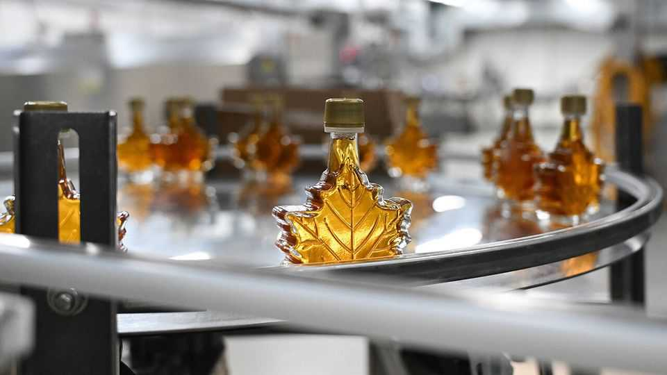
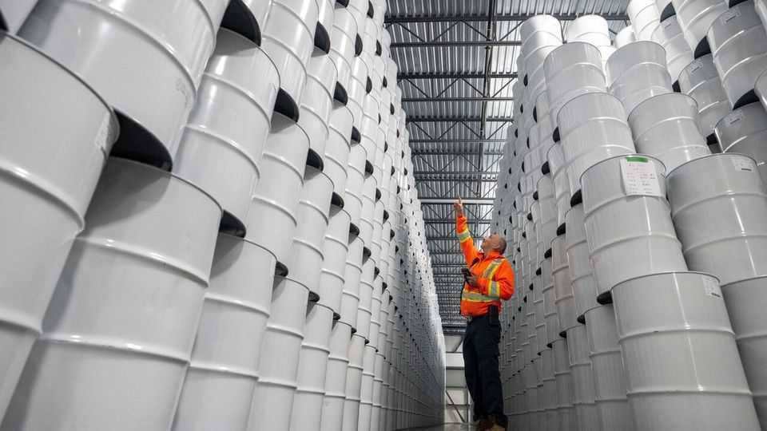

Quebec’s strategic maple-syrup reserve is running dry
The province’s cartel is losing its grip

Nov 12th 2026
QUEBEC’S STRATEGIC maple-syrup reserve is probably sweeter in the imagination than in reality, with its whitewashed barrels stacked from floor to ceiling in industrial halls. Yet the reserve, established in 2000 to stabilise prices and supply, is in a sticky situation: this winter it will run dry.
The last such calamity was in 2008, the result of several bad seasons. Barely had the reserve recovered when a few years later over $18m-worth of syrup was skimmed in a heist. More recently a series of poor harvests in the early 2020s and a sustained upswing in demand has left its barrels depleted. The reserve will be empty by February.
In a recent interview Luc Goulet of Quebec Maple Syrup Producers (PPAQ), an industry group, laid part of the blame on the uncertainty over American tariffs, which has led some buyers to bring forward purchases of Canadian syrup. But rising demand also reflects consumers’ shift away from refined sugars in favour of more natural options. Canada’s producers, which dominate the global supply of maple syrup, now make twice as much as a decade ago. Yet even that has not been enough to keep pace.

The industry has long centred on Quebec. In the early 2000s PPAQ, which controls the province’s wholesale market for bulk syrup, alongside managing the reserve, introduced strict marketing restrictions and output quotas. A paper published last year by Qingbin Wang and co-authors at the University of Vermont found that although these measures had helped to stabilise prices through good and bad harvests, they had stymied the ability of Quebec’s producers to expand their output as demand rose.
Between 1999 and 2005 Quebec accounted for 80% of North American production. By 2023, the latest year available, its share was down to 65%. Production in neighbouring New Brunswick has spurted. Buyers, who blend and package the syrup, are also sourcing more from America, particularly Vermont. Some of the biggest, such as Lantic and Turkey Hill Sugarbush, have built their own reserves. Quebec’s sweet deal may be ending. ■